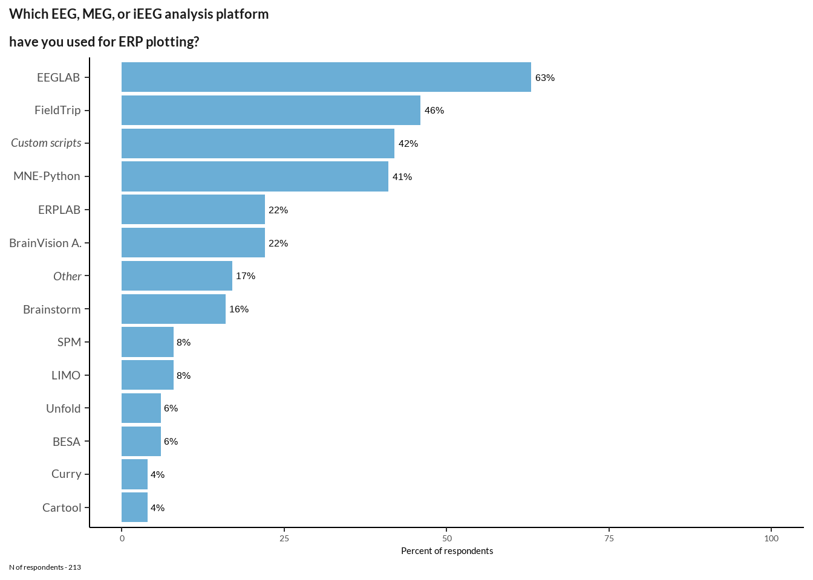
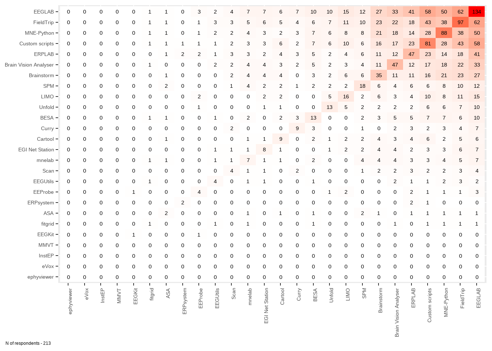

Code
data <- read_excel("data/results_survey.xlsx") #change to csv or tab and check will it work
data <- data[1:121] %>%
filter(.[[18]] !='Yes') # not analysed any EEG methodHere we present researcher’s visualization customs and awareness about some methodological problems.
data <- read_excel("data/results_survey.xlsx") #change to csv or tab and check will it work
data <- data[1:121] %>%
filter(.[[18]] !='Yes') # not analysed any EEG methodcit1 <- read.table(file = "data/cit/eeglab.txt", header = TRUE, fill = TRUE)[1:2] %>% mutate(name = "EEGLAB")
cit2 <- read.table(file = "data/cit/mne.txt", header = TRUE, fill = TRUE)[1:2]%>% mutate(name = "MNE")
cit3 <- read.table(file = "data/cit/erplab.txt", header = TRUE, fill = TRUE)[1:2]%>% mutate(name = "ERPLAB")
cit4 <- read.table(file = "data/cit/fieldtrip.txt", header = TRUE, fill = TRUE)[1:2]%>% mutate(name = "FieldTrip")
cit_data <- rbind(cit1, cit2, cit3, cit4) %>% rename_at(vars(colnames(.)), ~ c("year", "citations", "name"))na.omit(data[51]) %>% nrow()[1] 22other <- c(rep("Custom scripts",each=9), "4DBTi", rep("letswave", 3), "mTRF", "RAGU", "IGOR Pro", "EEGProcessor", "ELAN", "WinEEG") %>% table(.) %>% data.frame(.) %>% rename_at(vars(colnames(.)), ~ c("soft", "sum_scores"))vec <- names(data[25:50]) %>% str_split_i(., "\\? \\[", 2) %>% str_sub(., 1, -2)
software <- data[25:50] %>%
rename_at(vars(colnames(.)), ~ vec) %>%
mutate_at(vars(vec), function(., na.rm = FALSE) (x = ifelse(.=="Yes", 1, 0))) %>%
cbind(., data[51] %>% rename_at(vars(colnames(.)), ~ c("other"))) %>% mutate(other = case_when(
grepl("\\b(letswave)\\b", other, ignore.case = TRUE) == TRUE ~ "Letswave",
grepl("\\b(r|matlab|python|ggplot(2)?|own)\\b", other, ignore.case = TRUE) == TRUE ~ "Custom scripts",
grepl("\\bnever\\b", other, ignore.case = TRUE) == TRUE ~ NA_character_,
TRUE ~ as.character(other)
)) %>%
mutate(cs = ifelse(other == "Custom scripts", other, NA_character_),
other2 = ifelse(other != "Custom scripts", other, NA_character_)) %>%
mutate(`Custom scripts` = case_when(
cs == "Custom scripts" ~ as.numeric(1),
TRUE ~ as.numeric(`Custom scripts`)
)) %>%
mutate(Letswave = case_when( #gross
other2 == "Letswave" ~ as.numeric(1),
TRUE ~ as.numeric(0)
)) %>% dplyr::select(-cs, -other, -other2) # next time I also will extend other 2 too
d <- data.frame(rowSums(t(software))) %>% tibble::rownames_to_column(., "soft") %>%
rename_at(vars(colnames(.)), ~ c("soft", "sum_scores")) %>%
filter(sum_scores != 0) %>%
mutate(soft = ifelse(sum_scores > 8, as.character(soft), "Other")) %>% group_by(soft) %>%
dplyr::summarise(sum_scores = sum(sum_scores)) %>% ungroup() %>%
mutate(percent_score = round(sum_scores / nrow(software) * 100)) %>%
mutate(soft = factor(soft, levels = soft[rev(order(sum_scores))]))tools <- rev(c("EEGLAB", "FieldTrip", expression(italic("Custom scripts")), "MNE-Python", "ERPLAB", "BrainVision A.",
expression(italic("Other")), "Brainstorm", "SPM", "LIMO", "Unfold", "BESA", "Curry", "Cartool"))
font_add_google("Lato")
showtext_opts(dpi = 200)
showtext_auto(enable = TRUE)
chart <- d %>%
ggplot(data = ., aes(y = reorder(soft, percent_score), x= percent_score)) +
geom_bar(stat="identity", fill ="#6BAED6") +
labs(x= "", y="",# subtitle="",
title="Which EEG, MEG, or iEEG analysis platform\nhave you used for ERP plotting?") +
geom_text(aes(label = paste0(percent_score, "%")),
hjust = -0.2, size = 4) +
theme_classic() + theme(legend.position="none", axis.text.y = element_text(size = 14)) +
theme(legend.position="none", plot.caption.position = "plot",
plot.caption = element_text(hjust=0),
text = element_text(family = "Lato"),
axis.text.x = element_blank(), axis.text = element_text(size = 10),
plot.title = element_text(color = "grey10", size = 16, face = "bold", margin = margin(t = 15)),
plot.title.position = "plot") +
xlim(0, 68) +
scale_y_discrete(labels = tools)
chart +
labs(caption = sprintf("N of respondents - %d", nrow(software)))
Soft frequency among those who used only one software
ns <- cbind(data.frame(rowSums(software), software)) %>%
filter(rowSums.software. == 1) %>% dplyr::select(-rowSums.software.)
data.frame(rowSums(t(ns))) %>%
tibble::rownames_to_column(., "soft") %>%
rename_at(vars(colnames(.)), ~ c("soft", "sum_scores")) %>%
arrange(., desc(sum_scores)) %>% filter(sum_scores != 0) soft sum_scores
1 MNE.Python 11
2 EEGLAB 9
3 FieldTrip 8
4 Brain.Vision.Analyser 2
5 Custom.scripts 2
6 ERPLAB 1
7 SPM. 1
8 Unfold 1nu_med <- data.frame(rowSums(software)) %>% dplyr::rename(n_soft = rowSums.software.) %>% summarise(median_n_soft = median(n_soft)) %>% as.numeric()
data.frame(rowSums(software)) %>% dplyr::rename(n_soft = rowSums.software.) %>% #arrange(desc(n_soft))
ggplot(data = ., aes(n_soft)) +
geom_histogram(bins = 45) + scale_x_continuous(breaks=seq(0, 30, 1)) +
labs(x ="Number of software used", y="Count") +
theme_classic() + theme(legend.position="none", axis.text.x = element_text(size = 12)) +
labs(caption = sprintf("N of respondents - %d, median - %d", nrow(software), nu_med)) +
theme(legend.position="none", plot.caption = element_text(hjust=0), axis.text = element_text(size = 10)) # how to order by diagonal matrix
# how to add others
software <- data[25:50]
d1 <- foreach(i = colnames(software)) %do% ifelse(software[i]=="Yes", 1, 0)
c <- crossprod(matrix(unlist(d1), ncol = 26))
rownames(c) <- colnames(software) %>% str_split_i(., "\\? \\[", 2) %>% str_sub(., 1, -2)
colnames(c) <- rownames(c)
diag.order <- order(diag(c), decreasing = FALSE)
mat_reordered <- c[diag.order, diag.order]
mat_reordered %>% melt(.) %>% ggplot(., aes(x=Var1, y=Var2)) +
geom_tile(aes(fill = value)) +
geom_text(aes(label = value)) +
scale_fill_gradient(low = "white", high = "red") +
theme(legend.title = element_blank(),
axis.title=element_blank(),
axis.text.x = element_text(angle = 90, vjust = 1, hjust=1)) +
labs(caption = sprintf("N of respondents - %d", nrow(software))) +
theme(legend.position="none", plot.caption.position = "plot", plot.caption = element_text(hjust=0), axis.text = element_text(size = 10)) zero_rows <- rowSums(mat_reordered) == 0
zero_cols <- colSums(mat_reordered) == 0
# Create a new matrix array without the rows and columns consisting only of zeroes
new_matrix <- mat_reordered[!zero_rows, !zero_cols]
melt(new_matrix) %>% ggplot(., aes(x=Var1, y=Var2)) +
geom_tile(aes(fill = value)) +
geom_text(aes(label = value)) +
scale_fill_gradient(low = "white", high = "red") +
theme(legend.title = element_blank(),
axis.title=element_blank(),
axis.text.x = element_text(angle = 90, vjust = 1, hjust=1)) +
labs(caption = sprintf("N of respondents - %d. Zero rows are excluded", nrow(software))) +
theme(legend.position="none", plot.caption.position = "plot", plot.caption = element_text(hjust=0), axis.text = element_text(size = 10)) cbPalette <- c("#e3342f", "#f6993f", "#38c172", "#3490dc", "#6574cd", "#9561e2", "#4dc0b5", "#f66d9b")
#font_add_google("Lato")
showtext_opts(dpi = 200)
showtext_auto(enable = TRUE)
cit_data %>% filter(year < 2023) %>% group_by(year) %>%
mutate(ylast = case_when(year == 2022 ~ citations, TRUE ~ NA)) %>%
ggplot(., aes(x = year, y = citations, color = name, label = name)) + geom_line() +
geom_point(shape = 21, fill = 'white', size=2, stroke=1) +
scale_color_manual(values=cbPalette) +
theme_classic() + theme(legend.position = "none",
text = element_text(family = "Lato"),
plot.title = element_text(color = "grey10", size = 16, face = "bold", margin = margin(t = 15)),
plot.title.position = "plot",)+
coord_cartesian(clip = "off") +
geom_text_repel(
aes(color = name, label = name, x = 2022, y = ylast,),
family = "Lato",
fontface = "bold",
size = 4,
direction = "y",
xlim = c(2022.3, Inf),
hjust = 0,
segment.size = .7,
segment.alpha = .5,
segment.linetype = "dotted",
box.padding = .4,
segment.curvature = -0.1,
segment.ncp = 3,
segment.angle = 20
) + scale_x_continuous(
expand = c(0, 0),
limits = c(2003.8, 2026),
breaks = seq(2004, 2023, by = 3)
) + labs(
title = "Citations per year for the most popular EEG tools", subtitle = "", x = "Years", y = "Yearly citations"
) +
scale_y_continuous(
expand = c(0.04, 0),
breaks = seq(0, 1800, by = 200)
)